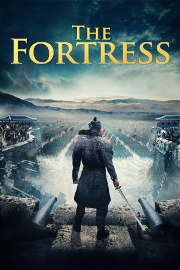

#11374 The Fortress
 
 IMDB-Wertung: 6.8 / 10
IMDB-Wertung: 6.8 / 10  Tomatometer: 50
Tomatometer: 50  Metascore: 0
Metascore: 0 
Im eiskalten Winter des Jahres 1636 belagert die chinesische Armee die Bergfestung Namhansanseong. Dort hat sich der koreanische König Injo mit seinem Hofstaat und seinen Truppen verschanzt, um der Unterwerfung durch den Feind zu entgehen. Nun muss er abwägen, ob er den Dialog mit den Belagerern suchen oder auf totalen Gegenangriff setzen soll. In der Festung eingeschlossen, müssen der König und seine Getreuen nicht nur den feindlichen Attacken trotzen, sondern auch Hunger und Kälte widerstehen. Welches Handeln gebietet die Ehre?
Jahr: 2017
Dauer: 139 Minuten
FSK:
Land: Süd-Korea Studio: CJ EntertainmentTonspuren:
Untertitel: Deutsch,
Auflösung: 1080p (1920x808) Größe: 7557 MB
Genre: Action, Drama, Krieg, Geschichte
Regisseur: Dong-hyuk Hwang
Drehbuch: Kim Hoon, Dong-hyuk Hwang
Soundtrack: Ryuichi Sakamoto
Darsteller:
- Byung-Hun Lee als
- Yoon-Seok Kim als
- Hae-il Park als
- Soo Go als
- Hee-soon Park als
- Woo-jin Jo als
- Song Hyun-soo als
- Byeong-hee Yoon als
Datei: X:\HD-Eastern-Classic(A-M)\Fortress, The (2017, FSK, 1920x808).mkv seit 24.06.2019
Festplatte: HD Eastern+Western
 Es gibt insgesamt 63 Filme in der Gruppe 'HD-Eastern-Classic(A-M)'
Es gibt insgesamt 63 Filme in der Gruppe 'HD-Eastern-Classic(A-M)'